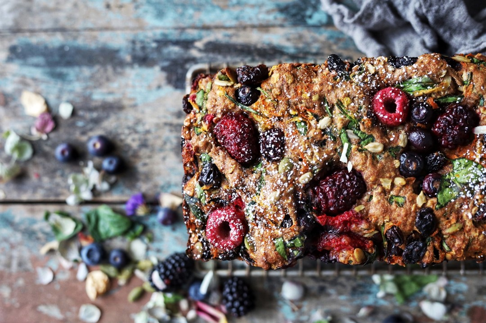

Everything Fruit, Veggie and Nut Bread
This bread is so fun to make! It is packed with tons of fun nutrients to bless your body. Loaded with fiber from various fruits, veggies, and grains and protein from nuts and seeds.
 Image from Simply Beautiful EatingBanana Pumpkin Spice Chocolate Chip Muffins
The flavors in these muffins are irresistable! When buying chocolate chips, I always look for a brand that uses real, whole food ingredients, doesn't contain inflammatory oils or artificial sweeteners, and has a lower amount of added sugars.
Nutritional benefits of bananas:
- Great source of soluble fiber
- Rich in potassium which helps reduce high blood pressure
- Has phytochemicals that help reduce inflammation, support immune system, prevents blood clots and repairs damaged DNA
- Red bananas and Lady Fingers are types of bananas that are even richer in antioxidants, vitamin C, potassium, calcium, and zinc than regular Cavendish bananas
Almond Butter Peach Blueberry Oatmeal Cups
A go-to healthy snack that fuels your body with protein and fiber from fruits, grains, and nuts!
Nutritional benefits:
- Peaches
- High in antioxidants - can inhibit tumor growth
- Anti-inflammatory properties
- Blueberries
- Richer in phytochemicals and antioxidants than any other fruit, veggie, or grain - powerful fruit!!
- Helps prevent diseases like diabetes and cancer
- Brain health
- Anti-inflammatory properties
- Oats
- Helps lower cholesterol
- Source of protein
- Whole grain that is rich in fiber
Sources: Dr. Josh Axe · Wardlaw's Contemporary Nutrition Textbook